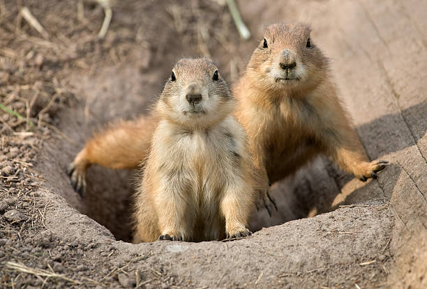

Our Furry Friends, the Prairie Dogs
Up in the Valles Caldera, about 80 miles north of Albuquerque, prairie dogs reign. The wide-open short-grass prairies are perfect habitat for the hundreds of colonies of prairie dogs that live there. There, you can hear them chattering to each other, darting into their labyrinths and popping back up to stand tall (14 inches) over the plains.
The scene for prairie dogs in Albuquerque, however, is a bit less idyllic. The highways, development lots, construction, and buildings have displaced prairie dogs and forced them to become urban dwellers. Our concrete jungle endangers the prairie dogs. At the same time, their presence can at times be a nuisance and a traffic hazard. Which is where Prairie Dog Pals comes in. When Liz Green and Ana Davidson saw hundreds of misplaced prairie dogs on Tramway Boulevard in the 1980s, they were compelled to do something. Green and Davidson began by feeding prairie dogs where their natural food sources had been eliminated. They also advocated against the use of poison on prairie dogs.
One of the biggest challenges these conservationists have faced is the public perception of prairie dogs, says president Yvonne Boudreaux. To many people, the desert dogs are pests that disrupt baseball practice, 18-hole golf rounds, or even the backyard. While they may occassionally disrupt our human habits, prairie dogs are a critical part of the ecosystem. Inhumane methods of removing them and extensive development threaens them, and as a keystone species, our desert ecosystem rests partially on their shoulders. Keystone species are species ecosystems depend on heavily to function. Prairie dog burrows attract other animals like burrowing owls, coyotes, raptors, and the endangered black-footed ferret. According to Davidson’s research, “The dramatic decline in prairie dogs has resulted in consequent losses in associated species and grassland habitat.” In a nutshell, the prairie dogs aren’t pests, they help form the glue that keeps the central grasslands together.
So how does one actually rescue the little critters that are so good at chirping at you, then darting back into their hobbit homes? The answer? “Bubble-ology,” jokes Boudreaux. Prairie Dog Pals has been officially helping our desert friends since they became a 501(c)3 non-profit in 1991 and they operate as a well-oiled machine. For larger sites, the team uses “flushing” which involves a mixture of water and non-toxic, biodegradable soap. A large water tank churns the mixture creating a “lighter than cotton candy foam and we put that down the burrow and we wait there, on hands and knees, and wait for a prairie dog to emerge,” says Boudreaux. The team tries to rescue prairie dogs in family groups. When they poke their small bodies out, someone grabs them around the shoulder blades with fingers under their armpits. The team does a quick health check on every prairie dog, ensuring their eyes are clear, teeth are straight,and all toes are accounted for. The team is also prepared to do first aid for bites or cuts, and has a veterinarian that is willing to take on more serious injuries.
But Prairie Dog Pals has a mission to rescue all prairie dogs, not just larger colonies. They respond to calls for individual dogs as well, at no cost to you. “We’ve always made it our policy as well that we would go get singles wherever they turn up,” explains Boudreaux. Such a policy keeps the dogs from being targeted by less humane practices. That even goes for prairie dogs that are outside of Albuquerque, outside of New Mexico, or even outside the Southwest. According to Bourdreaux, Prairie Dog Pals has also “made it our policy from the beginning that if any pet trade prairie dog turns up and needs to be rescued that we would go get it.” This means that if a student going off to college has a prairie dog she can’t take, someone from Prairie Dog Pals will drive up to Washington D.C. or Washington State to fetch it. And yes, they have done just that.
Besides bad PR surrounding prairie dogs, perhaps the next biggest challenge for the Pals is finding land that fits their ecosystem. In fact, despite Prairie Dog Pal’s commitment to saving individual dogs or dogs that are out of their way, Boudreaux reports that they cannot rescue dogs in northern New Mexico because the ecosystem is too different. For any calls they might get from Taos or Los Alamos, they refer people to an associate in Santa Fe. Further, any land that does fit the local prairie dogs’ ecological needs has its own carrying capacity. Prairie Dog Pals is cautious of overcrowding their land—otherwise they could end up doing more harm than good to their precious pups and the rest of the ecosystem. In their top season, Prairie Dog Pals rescued about 2,000 dogs. However, Boudreaux says that their success is really demonstrated by decreasing numbers across seasons. The fewer rescues they make per season, the more prairie dogs have been permanently relocated to healthier, safer land.
Prairie Dog Pals accept volunteers and donations. But regardless of your formal affiliation with the group, everybody can be a prairie dog pal by recognizing the pups’critical place in our desert.